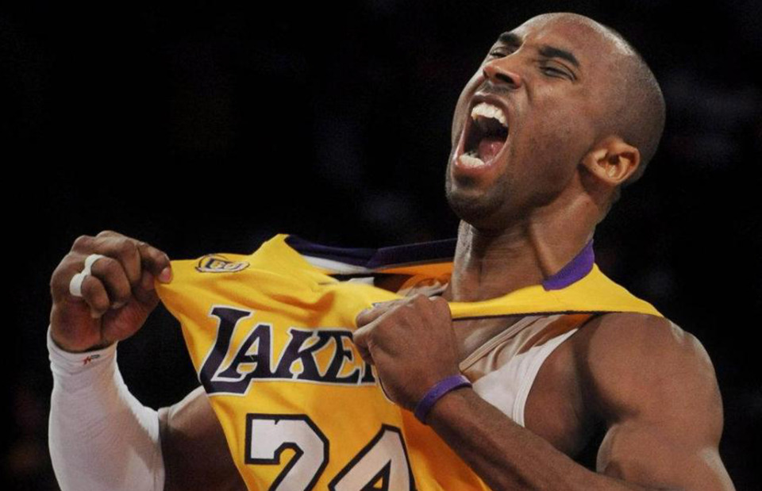
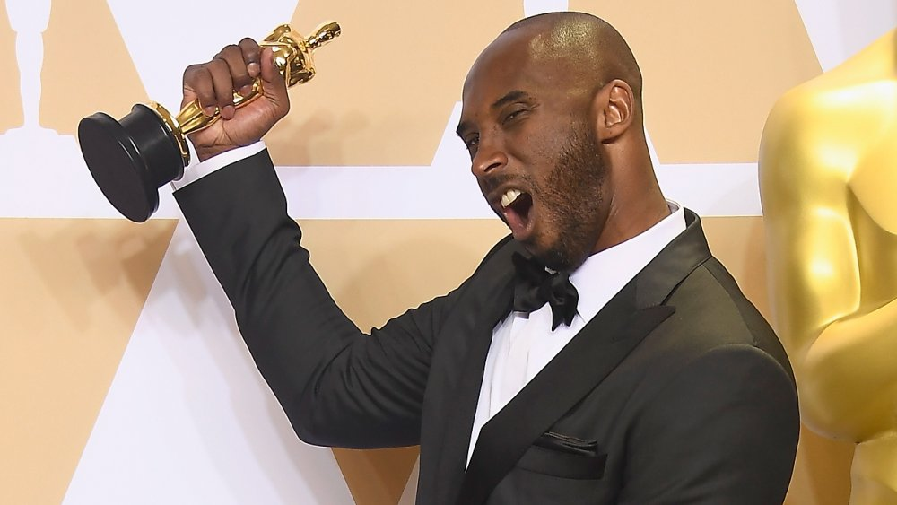

Nike Men's Yellow Kobe Ad Nxt 360 Sneakers
 Nearly fifty years after its conception in 1971, Nike’s iconic Swoosh logo remains unchanged, showcasing a prevalent and pioneering symbol for the brand.
Presented in yellow and purple, these Kobe AD NXT 360 sneakers feature a round toe, a lace-up front fastening, a signature Nike swoosh, a rubber sole and purple accents on the translucent cushioned outsole and tongue.
These styles are supplied by a premium sneaker and street wear marketplace. Stocking only the most sought-after footwear and clothing, they source and curate some of the most hard-to-find items from around the world.
Nearly fifty years after its conception in 1971, Nike’s iconic Swoosh logo remains unchanged, showcasing a prevalent and pioneering symbol for the brand.
Presented in yellow and purple, these Kobe AD NXT 360 sneakers feature a round toe, a lace-up front fastening, a signature Nike swoosh, a rubber sole and purple accents on the translucent cushioned outsole and tongue.
These styles are supplied by a premium sneaker and street wear marketplace. Stocking only the most sought-after footwear and clothing, they source and curate some of the most hard-to-find items from around the world.
Kobe highschool Life
 Bryant earned national recognition during a spectacular high school career at Lower Merion High School located in Ardmore, Philadelphia.
He became the first freshman in decades to start for Lower Merion's varsity team, but the team finished with a 4-20 record.
The following three years, the Aces compiled a 77-13 record, with Bryant playing all five positions. During his junior year, he averaged 31.1 points, 10.4 rebounds and 5.2 assists and was named Pennsylvania Player of the Year, attracting attention from college recruiters in the process.
Duke, Michigan, North Carolina and Villanova were at the top of his list; however, when Kevin Garnett went in the first round of the 1995 NBA draft, he began considering going directly to the pros.
Bryant earned national recognition during a spectacular high school career at Lower Merion High School located in Ardmore, Philadelphia.
He became the first freshman in decades to start for Lower Merion's varsity team, but the team finished with a 4-20 record.
The following three years, the Aces compiled a 77-13 record, with Bryant playing all five positions. During his junior year, he averaged 31.1 points, 10.4 rebounds and 5.2 assists and was named Pennsylvania Player of the Year, attracting attention from college recruiters in the process.
Duke, Michigan, North Carolina and Villanova were at the top of his list; however, when Kevin Garnett went in the first round of the 1995 NBA draft, he began considering going directly to the pros.
Getting started in the league
 Bryant’s father, Joe (“Jelly Bean”) Bryant, was a professional basketball player who spent eight seasons in the NBA and eight more playing in Italy, where Bryant went to school. When his family returned to the United States, Bryant played basketball at Lower Merion High School in Ardmore, Pennsylvania, where he received several national Player of the Year awards and broke the southeastern Pennsylvania scoring record set by Wilt Chamberlain with 2,883 points. Bryant opted to forgo college and declared himself eligible for the NBA draft when he graduated from high school. The Charlotte Hornets chose him with the 13th pick of the 1996 draft.
He was traded to the Lakers shortly thereafter and became the second youngest NBA player in history when the 1996–97 season opened.
He quickly proved his merit with the Lakers and was selected for the NBA All-Star Game in just his second season, becoming the youngest All-Star.
Bryant’s father, Joe (“Jelly Bean”) Bryant, was a professional basketball player who spent eight seasons in the NBA and eight more playing in Italy, where Bryant went to school. When his family returned to the United States, Bryant played basketball at Lower Merion High School in Ardmore, Pennsylvania, where he received several national Player of the Year awards and broke the southeastern Pennsylvania scoring record set by Wilt Chamberlain with 2,883 points. Bryant opted to forgo college and declared himself eligible for the NBA draft when he graduated from high school. The Charlotte Hornets chose him with the 13th pick of the 1996 draft.
He was traded to the Lakers shortly thereafter and became the second youngest NBA player in history when the 1996–97 season opened.
He quickly proved his merit with the Lakers and was selected for the NBA All-Star Game in just his second season, becoming the youngest All-Star.
Kobe in his prime
The very peak of Bryant’s career was arguably between 2006 and 2009. You can throw 2010 in there, as well, but by that point, Bryant seemed to be declining ever so slightly, as the Los Angeles Lakers had to rely a lot more on Pau Gasol and Andrew Bynum to defeat the Boston Celtics in those NBA Finals. But before 2010, Kobe Bryant was at his peak and was abusing any defender who dared to get in his way, and he was actually doing it with solid efficiency. From 2006 through 2009, Bryant’s true-shooting percentage only dipped below 56 percent once, which came in 2006 when it was at 55.9 percent. Otherwise, the “inefficient chucker” reputation that Kobe had was simply wrong back then, as evidenced by his true-shooting percentages of 58 percent in 2007, 57.6 percent in 2008 and 56.1 percent in 2009.
Life after the game
Behind Kobe Bryant's athletic prowess was a creative man inspired to tell his complex life story through art. In fact, the NBA star transformed his retirement poem, "Dear Basketball," into an Oscar-nominated short. The project features Kobe narrating the poem over a hand-drawn animation depicting his life from childhood to adulthood. It's a moving visual vignette that earned him critical praise.